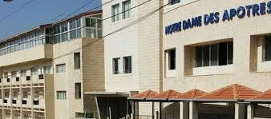

Notre Dame des Apotres School
Teaching context for my mathematics classes, with attention to student progress, classroom interaction, and clear mathematical reasoning.
School and courses
I teach mathematics at Notre Dame des Apotres School for Grade 6 and Grade 7 classes. This page presents my school context, course materials, and educational projects.

School context
Notre Dame des Apotres School is the professional context where I teach mathematics to Grade 6 and Grade 7 learners. This page will gradually collect course materials, classroom projects, and resources connected to my teaching practice.
Teaching context for my mathematics classes, with attention to student progress, classroom interaction, and clear mathematical reasoning.
I teach mathematics for Grade 6 and Grade 7 classes. Course PDFs, exercises, and lesson documents can be added in files/courses.
Course file placeholderThis area will present classroom tools, mathematics activities, student support actions, and projects developed through the school year.